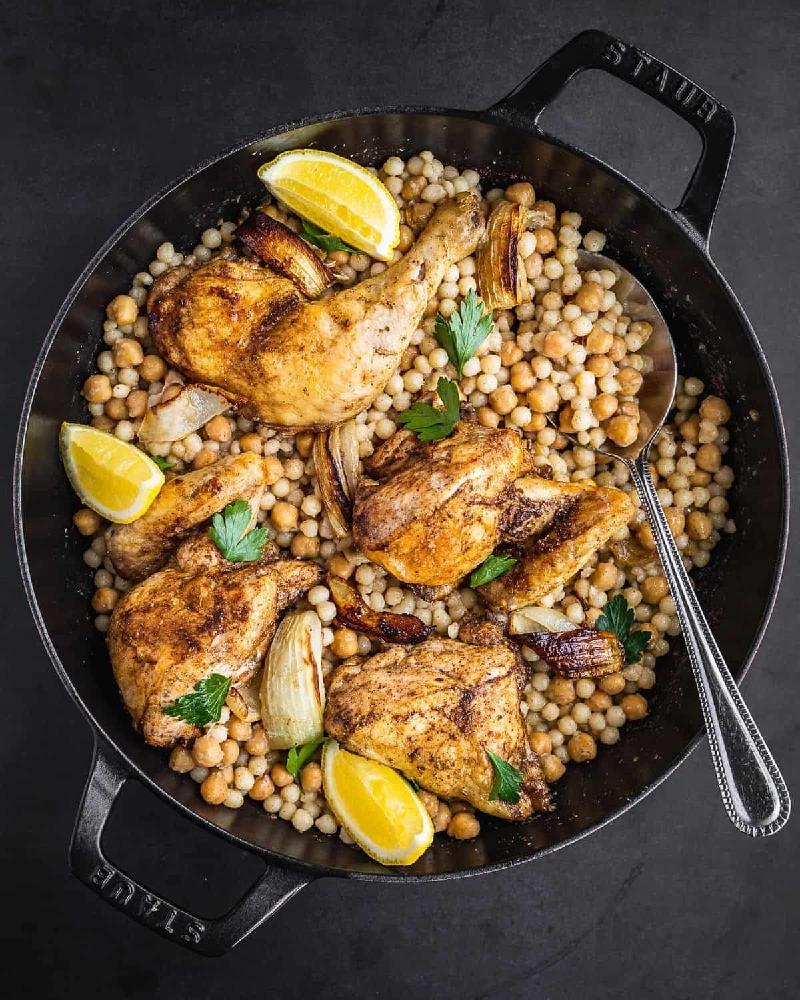

Maftoul

Description:
Maftoul is a traditional Palestinian dish made from large, hand-rolled couscous grains. The couscous is typically steamed and served with a flavorful stew, often featuring chicken, vegetables, and chickpeas, seasoned with aromatic spices like cumin, coriander, and cinnamon. The dish is hearty, comforting, and packed with rich, savory flavors, making it a staple in Middle Eastern cuisine, especially in Palestine and neighboring regions.
Ingredients
For the maftoul:
-
1 cup maftoul
-
1 tablespoon olive oil
-
1 cup water or chicken broth
-
Salt to taste
For the chicken and vegitable stew:
-
4 chicken thighs (or breasts), cut into pieces
-
1 onion, chopped
-
2 tomatoes, chopped
-
2 carrots, diced
-
1 zucchini, diced
-
1/2 cup chickpeas (cooked or canned)
-
2 garlic cloves, minced
-
1 teaspoon ground cumin
-
1 teaspoon ground coriander
-
1/2 teaspoon cinnamon
-
1 teaspoon turmeric
-
Salt and pepper to taste
-
4 cups chicken broth (or water)
-
1/4 cup olive oil
-
Fresh parsley (for garnish)
Steps to make it:
-
Cook the Chicken and Vegetables:
In a large pot, heat the olive oil over medium heat. Add the chopped onion and garlic, cooking until softened. Add the chicken pieces and cook until browned on all sides. Then, add the chopped tomatoes, carrots, zucchini, and chickpeas to the pot. Stir in the cumin, coriander, cinnamon, turmeric, salt, and pepper. Pour in the chicken broth and bring to a simmer. Let it cook for 30-40 minutes until the chicken is fully cooked and the vegetables are tender.
-
Prepare the Maftoul:
In another pot, heat olive oil over medium heat. Add the maftoul (or couscous) and toast it lightly for about 2-3 minutes. Then, add water or chicken broth and a pinch of salt. Cover and let it steam for 10-15 minutes, or until the couscous is soft and the liquid is absorbed. Fluff the maftoul with a fork once it's ready.
-
Assemble and Serve:
To serve, place the maftoul on a large platter or individual plates. Spoon the chicken and vegetable stew on top, making sure to include the broth. Garnish with fresh parsley for extra flavor.
Home